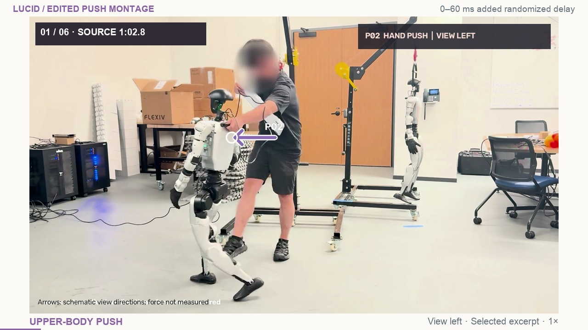

0:00–0:15
Selected push highlights

Narration
Hand pushes. Foot pushes. Downward pressure. These highlights show the same turning policy under added randomized delay. Next, the full continuous take.
Story and visualization
Six 2.25-second excerpts show upper-body pushes, leg pushes, downward pressure and combined contacts. Recorded direction annotations and face-only blur remain. The opening is explicitly labeled as an edited montage at 1×. A 1.5-second transition leads into the full presentation and its uninterrupted hardware take.
Watch the 15-second opening ↗